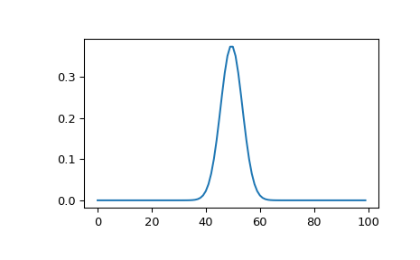
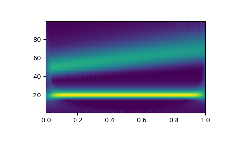

scipy.signal.morlet2¶
-
scipy.signal.morlet2(M, s, w=5)[source]¶ Complex Morlet wavelet, designed to work with
cwt.Returns the complete version of morlet wavelet, normalised according to s:
exp(1j*w*x/s) * exp(-0.5*(x/s)**2) * pi**(-0.25) * sqrt(1/s)
- Parameters
- Mint
Length of the wavelet.
- sfloat
Width parameter of the wavelet.
- wfloat, optional
Omega0. Default is 5
- Returns
- morlet(M,) ndarray
Notes
New in version 1.4.0.
This function was designed to work with
cwt. Becausemorlet2returns an array of complex numbers, the dtype argument ofcwtshould be set to complex128 for best results.Note the difference in implementation with
morlet. The fundamental frequency of this wavelet in Hz is given by:f = w*fs / (2*s*np.pi)
where
fsis the sampling rate and s is the wavelet width parameter. Similarly we can get the wavelet width parameter atf:s = w*fs / (2*f*np.pi)
Examples
>>> from scipy import signal >>> import matplotlib.pyplot as plt
>>> M = 100 >>> s = 4.0 >>> w = 2.0 >>> wavelet = signal.morlet2(M, s, w) >>> plt.plot(abs(wavelet)) >>> plt.show()
This example shows basic use of
morlet2withcwtin time-frequency analysis:>>> from scipy import signal >>> import matplotlib.pyplot as plt >>> t, dt = np.linspace(0, 1, 200, retstep=True) >>> fs = 1/dt >>> w = 6. >>> sig = np.cos(2*np.pi*(50 + 10*t)*t) + np.sin(40*np.pi*t) >>> freq = np.linspace(1, fs/2, 100) >>> widths = w*fs / (2*freq*np.pi) >>> cwtm = signal.cwt(sig, signal.morlet2, widths, w=w) >>> plt.pcolormesh(t, freq, np.abs(cwtm), cmap='viridis') >>> plt.show()
